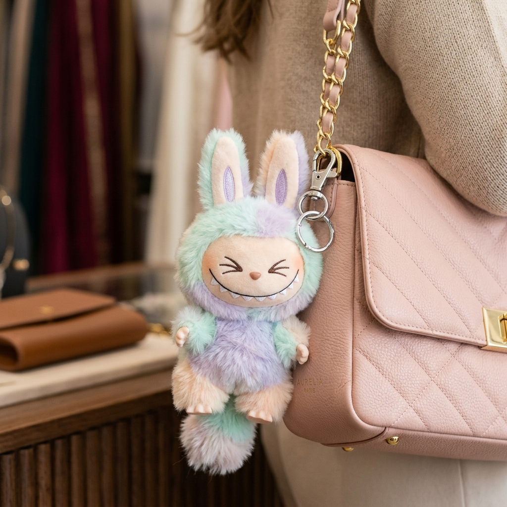
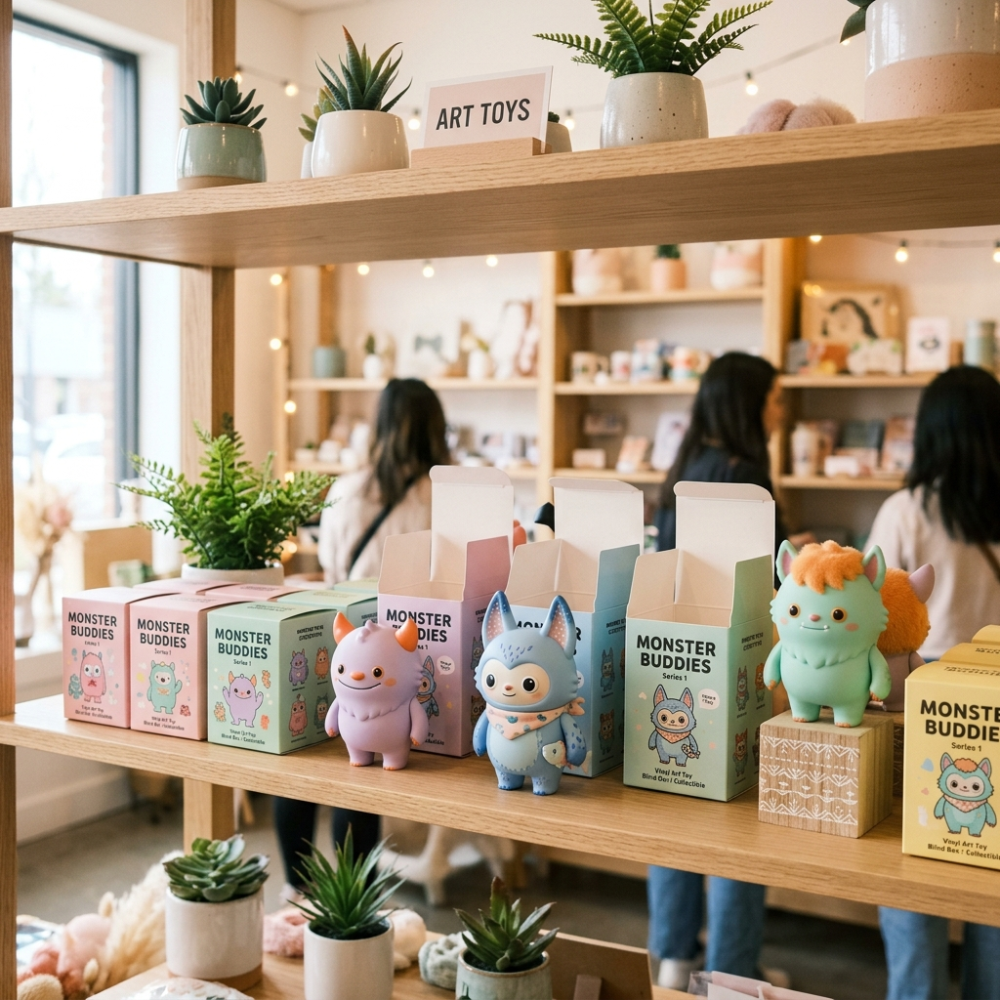

解鎖 Z 世代的
情緒經濟學！
以 POP MART 旗下最火爆 IP ── LABUBU 玩具吊飾為核心，洞察台灣 Gen Z 在社群碎片化時代的情感投射與消費美學。

誰是台灣 Z 世代？三大核心 Persona
他們生活在數位洪流中，不買房只買快樂，極度追求社群上的「社交貨幣」與「自我展現」。
日常課業焦慮，害怕與朋友圈流行脫軌 (FOMO 焦慮症)。
盲盒開箱的賭博快感 + 超強的穿搭社交屬性，掛上立馬變社群焦點。
高房價與物價下的「精緻窮」代表，需要在瑣碎工作中獲得療癒。
桌上擺滿醜萌公仔，心情煩悶時捏一捏，提供無可替代的「情緒價值」。
不滿足於工廠流水線複製品，極力追求獨一無二的自我標籤。
極具改裝潛力（編織毛線帽、換鞋子、穿戴袖珍眼鏡），成了極佳的手作創作畫布。
關鍵 Z 世代共鳴字：【精緻窮】、【喪文化】、【Threads 廢文流】
不要說教！不要用高高在上的姿態！Z 世代只會為符合他們當下心境（如擺爛、想發瘋、又愛面子）的醜萌 IP 付費。
LABUBU 爆紅的三大超凡魅力基因
這隻長著九顆尖牙的精靈，是怎麼從一眾精緻娃娃中脫穎而出，成為現象級潮玩的？
藝術家龍家昇的「反差萌」設計
LABUBU 擁有兩隻長長尖尖的耳朵、一排多達九顆的尖牙，看起來古怪調皮，性格卻善良淘氣。這種「醜萌、亦正亦邪」的反差，完美戳中了厭倦了虛假精緻的 Z 世代靈魂。
頂流 Lisa 帶貨的「野生代言」
2024年，BLACKPINK 成員 Lisa 在 IG 連續曬出她抱著 LABUBU 巨型玩偶、包包上掛著 Tasty Macarons 馬卡龍系列吊飾的日常照，瞬間引爆全亞洲跟風，把一款小眾玩具推向主流潮流顛峰。
隨機盲盒經濟 + 限量飢餓行銷
泡泡瑪特（POP MART）利用「盲盒」的隨機快感與極低機率的「隱藏款」，刺激用戶的收集強迫症；加上區域限定（如曼谷限定、東京限定），更增添了其社交炫耀價值。

實體門市的 LABUBU 盲盒牆：Z 世代排隊的瘋狂現場
Z 世代消費習慣與 LABUBU 社群趨勢數據
利用飽和配色與互動圖表，科學解密 Z 世代大腦中的消費權重分布。
💡 Z 世代消費動機：「情緒價值」買單分布
情緒陪伴與社交炫耀是他們花錢的第一驅動力。
📈 2024-2026 台灣三大社群 LABUBU 聲量趨勢
Threads 在 2025 年起呈現爆發式增長，成為曬娃聖地。
📱 Z 世代資訊獲取主要渠道佔比
短影音 Reels 與 Threads 心情文遠超傳統 Google 搜尋與FB。
🎬 專題特製廣告片播放清單
我們為 Z 世代量身定做了 4 支創意廣告片，精準切中【喪文化】、【精緻窮】與【Threads 潮流】痛點。點擊卡片即可切換播放！
📚 專題報告完整 PDF 文件檢視
以下是我們小組撰寫的 18MB 完整專題報告 PDF。您可以直接在網頁中滑動閱讀，或下載至本機查閱！
LABUBU PDF.pdf
檔案大小：18.0 MB • 完整行銷策略分析報告
台灣在地行銷渠道與落地打法
如何利用台灣在地特有的社群與文化，把聲量轉化為源源不絕的「曬娃」裂變？
Threads 迷因話題製造
利用 Threads 發起「#我的拉布布很瘋」挑戰。撰寫「廢話體、碎碎念」的 KOC 貼文，配上 LABUBU 的搞笑崩壞表情，引起演算法廣泛傳播。
改娃手作穿搭 OOTD
迎合 Z 世代「要搞怪、要特立獨行」的愛好。與台灣編織藝術家聯名，在泡泡瑪特西門旗艦店限時發售「迷你珍奶包」、「臭豆腐玩偶裝」等台灣味配件。
線下街頭潮酷巡迴
在台北信義香堤大道、台中草悟道打造 3 米高「巨型充氣 LABUBU 改娃展」。現場提供拍貼機與發瘋標語，吸引數萬名 Z 世代打卡上傳 Reels。
實名制抽籤防堵黃牛
黃牛代排是傷害 Z 世代品牌忠誠度的最大殺手。實施 POP MART APP 綁定手機號碼與身分證末四碼抽選，並在 Threads 上透明公佈中籤率，贏得鐵粉信賴。
🧠 小組互動工作坊 & 即時決策白板
本區資料皆即時存檔於您的瀏覽器！請留下您的創意點子便利貼，並對第一波主打商品策略進行模擬投票！
創意便利貼白板
引流商品策略即時投票
你認為哪一種類型的 LABUBU 商品能為我們在台灣帶來最大聲量與實際引流？
行銷執行時程規劃 (6個月)
有條不紊的節奏，將短期的社群爆紅轉化為品牌在台灣長期的忠誠擁護。
社群鋪底與 KOC 改娃裂變
大範圍派發馬卡龍吊飾給 50 位 Threads 語錄體網紅與小紅書、IG 穿搭 KOC。發起「#我的LABUBU穿搭」話題，讓公仔吊飾成為包包標配。
快閃聯名手作坊與在地限定款
於台北華山或誠品開設「LABUBU DIY 改娃小衣服工作坊」。與台灣手搖飲大牌（如 50嵐、得正）進行包材或贈品聯名，觸及泛大眾客群。
實名防牛系統上線與鐵粉深耕
全面啟用 POP MART APP 的身分認證預約購買機制，保障核心玩家權益。提供改娃大賽得獎者「限定公仔購買特權」，固化核心潮流粉絲圈。